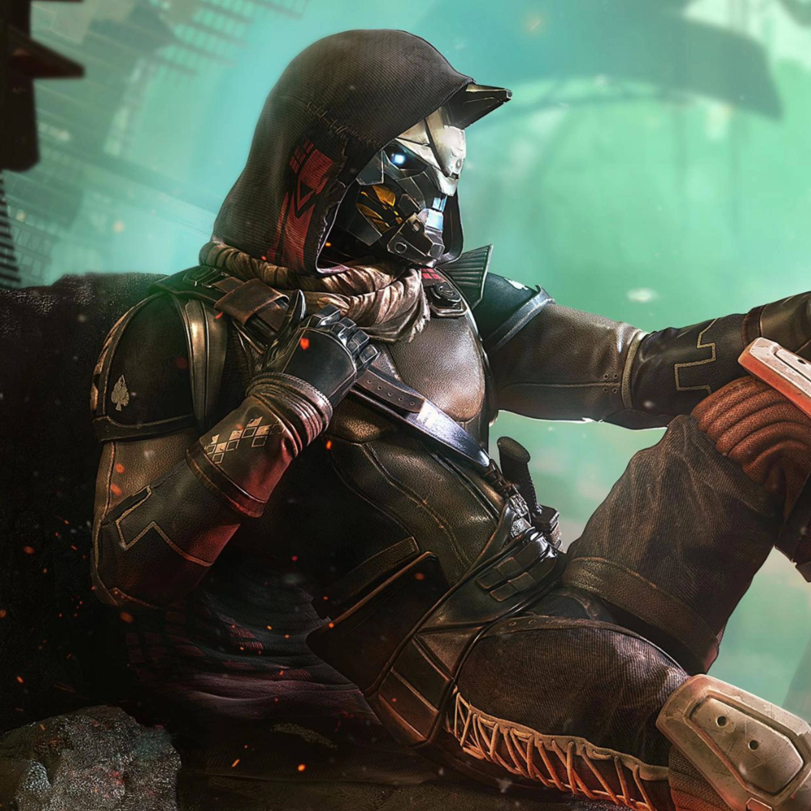

Cayde-6

Cayde-6 is a character from the video game Destiny. As one of the Vanguard leaders of the Last City, humanity's final bastion, he worked to protect people from the encroaching threats towards Earth and the Sol System. He does his duty as he sees fit with his trusty hand cannon, the Ace of Spades, by his side.
Why I Like Cayde-6
- Within his role, he is comic relief that recognizes when things need to be serious.
- Look at his outfit! He's got that stuff on!
- His weapon, the Ace of Spades, is very fun to use in-game.
- He has been involved in the most intriguing storylines of the game.